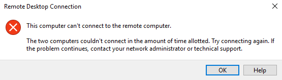

Symptom
An error message is displayed indicating that the computer cannot connect to the remote computer in the amount of time allotted.
Figure 1 Error message

Solution
- On the local computer, click on the Start icon, type cmd into the box, and run the command as an administrator.
- Run the netsh winsock reset command.
- Restart the local computer as prompted and reconnect to the ECS.